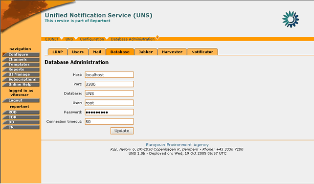

The UNS application gives to the administrator possibility to configure and modify several application parameters.
Figure 22: UNS Configuration Options
More specifically, the user can configure the following:
In order to edit the Mail parameters, you must be logged in as UNS Administrator.
If you have administrator privileges, then the following steps must be followed:
STEP 1 – Login
If you are not already logged in, see: Authenticate User Account.
STEP 2 – Click on “Configure” button on the navigation bar.
In order to edit the Mail options, the “Mail” tag must be selected.
Figure 23: Mail Parameters page
STEP 3 – Edit values for SMTP/POP3 Servers
For each of the servers, the following fields are editable:
- Host: The host name or IP address of the SMTP/POP3 servers.
- Port: The network port at which the server is listening
- Username/Password (if required): The credentials that are used to access the server
- Administrator e-mail (POP3 only): The email address of the server’s administrator.
The user can edit any of the server settings available. Changing the SMTP server settings will affect the server through which e-mail notifications are sent.
The POP3 server is primarily used for retrieval of failed mail notifications. The Administrator e-mail address is used by the UNS to identify itself as sender of the notifications and to identify the inbox on the server where it shall look for returned notifications.
* Important note: A Mail parameter cannot be changed if Notifications daemon is running. An administrative user needs to stop Notificator daemon before trying to change mail parameters.
STEP 4 – Update Configuration
In order for any changes to take effect the user must select the “Update” button. If the operation is successful, the appropriate information message will be displayed. However, if any of the new settings are not valid (wrong address of server/port, wrong username/password) the application will not allow the configuration update and return the appropriate error message.
Figure 24: Error message in Mail parameters page
Similar error messages will also be returned in case the user tries to change the Mail configuration while the Notificator Daemon is running. In such cases the Notificator must first be shut down (see section 4.7.7).
In summary:
Step |
Edit Mail Parameters |
1 |
Login |
2 |
Click on “Configure” button |
3 |
Edit values for SMTP/POP3 Servers |
4 |
Update Configuration |
In order to edit the LDAP parameters, you must be logged in as UNS Administrator.
If you have administrator privileges, then the following steps must be followed:
STEP 1 – Login
If you are not already logged in, see Authenticate User Account.
STEP 2 – Click on “Configure” button on the navigation bar.
In order to edit the LDAP options, the “LDAP” tag must be selected.
Figure 25: LDAP Parameters page
STEP 3 – Edit values for LDAP server
The user can edit any of the server parameters. Changing the LDAP server parameters will affect the UNS user authentication. The following fields are editable:
- Server host, IP or socket path: The hostname or IP address for the LDAP server.
- Server port: The port that the LDAP server is listening on. By default, an LDAP server listens on port 389.
- Protocol: Select whether to use standard LDAP, LDAP over SSL or LDAP over IPC.
- Login Name Attribute: The LDAP record attribute used as the username. The list of default choices can be changed by adding attributes on the LDAP Schema tab in the LDAPUserFolder product instance.
- User ID Attribute: The LDAP record attribute used as the user ID. The list of default choices that can be changed by adding attributes on the LDAP Schema tab in the “LDAP UserFolder” product instance.
- RDN Attribute: The RDN attribute (Relative Distinguished Name) is the name of the LDAP attribute used as the first component of the full DN (Distinguished Name).
- Users Base DN: The DN for the branch of the LDAP database that contains user records.
- Scope: Choose the depth for all searches from the user search base DN.
- Group storage: Choose where to store the group (a.k.a. Role) information for users.
- Groups Base DN: The DN for the branch of the LDAP database that contains group records. These group records are of the LDAP class "groupOfUniqueNames" and the entry CN attribute constitutes the group name.
- Scope: Choose the depth for all searches from the group search base dn. If you have chosen to store groups inside the user folder itself this setting will be disregarded.
- Manager DN and password: Under normal operation if no separate Manager DN is provided, the UNS will use the current user's DN and password to authenticate against the LDAP server. If a Manager DN and password are given, these will be used instead.
- Manager DN usage: Specify how the Manager DN (if it has been provided) will be used.
The option “Never” means that will never apply this DN. If no Manager DN is specified then this is the default value. The option “Always” means that the Manager DN is used to bind for every single operation on the LDAP server.
The option “For login data lookup only” uses the Manager DN upon user login when the user itself has not been instantiated yet and thus the user's DN is not yet known. Once the user has been instantiated its DN and password are used for binding.- User object classes : Comma-separated list of object classes for user records. Any new user record created through the “LDAPUserFolder” will carry this list of object classes as its objectClass attribute.
- User password encryption : This dropdown specifies the encryption scheme used to encrypt a user record “UserPassword” attribute. This scheme is applied to the plaintext password when a user edits the password or when a new user is created in LDAPUserFolder product. Check your LDAP server to see which encryption schemes it supports, pretty much every server can at least do "crypt" and "SHA".
- Default User Roles: All users authenticated from the LDAP tree will be given the roles user put into this comma-delimited list.
STEP 4 – Update Configuration
In order for any changes to take effect the user must select the “Apply Changes” button. If the operation is successful, the appropriate information message will be displayed. However, if any of the new settings are not valid (wrong address of server/port, wrong user base) the application will not allow the configuration update and will return the appropriate error message.
Figure 26: Error message while saving invalid LDAP settings
In summary:
Step |
Edit LDAP Parameters |
1 |
Login |
2 |
Click on “Configure” button |
3 |
Edit values for LDAP Servers |
4 |
Update Configuration |
In order to edit the Database parameters, you must be logged in as UNS Administrator.
If you have administrator privileges, then the following steps must be followed:
STEP 1 – Login
If you are not already logged in, see section 3 (Authenticate User Account).
STEP 2 – Click on “Configure” button on the navigation bar.
In order to edit the LDAP options, the “Database” tag must be selected.

Figure 27: Database Administration page
STEP 3 – Edit values for UNS Database
The user can edit any of the database connection parameters. Changing these parameters will affect the data the UNS application accesses.
STEP 4 – Update Configuration
In order for any changes to take effect the user must select the “Update” button. If the operation is successful, the appropriate information message will be displayed. However, if any of the new settings are not valid (wrong address of database/port, wrong username/password) the application will not allow the configuration update and will return the appropriate error message.
Figure 28: Error message while saving invalid database connection settings
Similar error messages will also be returned in case the user tries to change the Database configuration while the Harvester daemon is running. In such cases the Harvester must first be shut down (see section 4.7.6).
Important note: A Database parameter cannot be changed if Notifications and/or Harvester daemon are running. An administrative user needs to stop those daemons before trying to change database parameters.
In summary:
Step |
Edit Database Parameters |
1 |
Login |
2 |
Click on “Configure” button |
3 |
Edit values for UNS Database |
4 |
Update Configuration |
In order to edit the Jabber parameters, you must be logged in as UNS Administrator.
If you have administrator privileges, then the following steps must be followed:
STEP 1 – Login
If you are not already logged in, see section 3 (Authenticate User Account).
STEP 2 – Click on “Configure” button on the navigation bar.
In order to edit the Jabber options, the “Jabber” tag must be selected.
Figure 29: Jabber settings page
STEP 3 – Edit values for Jabber Server
The user can edit any of the Jabber server connection parameters. Changing these parameters will affect the server to which the Jabber notification messages will be delivered to.
STEP 4 – Update Configuration
In order for any changes to take effect the user must select the “Update” button. If the operation is successful, the appropriate information message will be displayed. However, if any of the new settings are not valid (wrong server hostname/port, wrong username/password) the application will not allow the configuration update and will return the appropriate error message.
Figure 30: Error message while saving invalid Jabber server settings
Similar error messages will also be returned in case the user tries to change the Jabber configuration while the Notificator daemon is running. In such cases the Notificator must first be shut down (see section 4.7.7).
Important note: A Jabber parameter cannot be changed if Notifications daemon is running. An administrative user needs to stop Notifications daemon before trying to change jabber parameters.
In summary:
Step |
Edit Jabber Parameters |
1 |
Login |
2 |
Click on “Configure” button |
3 |
Edit values for Jabber Server |
4 |
Update Configuration |
The Harvester daemon is the module that browses through the content channels in order to check for new events. In order to edit the Harvester daemon settings, you must be logged in as UNS Administrator.
If you have administrator privileges, then the following steps must be followed:
STEP 1 – Login
If you are not already logged in, see Authenticate User Account.
STEP 2 – Click on “Configure” button on the navigation bar.
In order to edit the Harvester options, the “Harvester” tag must be selected.
Figure 31: Harvester Daemon administration page
STEP 3 – Edit values for Harvester Daemon
The user the following options:
- Set the time interval for which the Harvester will search channels for new events
- Start/Stop the Harvester
STEP 4 – Update Configuration
In order for any changes in the Harvester innovation interval to take effect the user must select the “Update” button.
However, if the user wishes to Start/Stop the Harvester, the corresponding Start/Stop button on the Harvester control box needs to be selected. Upon the selection of the button the screen will be refreshed and the new Harvester status will be displayed.
In case of error, the appropriate error message will be returned.
In summary:
Step |
Edit Harvester Configuration |
1 |
Login |
2 |
Click on “Configure” button |
3 |
Edit values for Harvester Daemon |
4 |
Update Configuration |
The Notificator daemon is the module that sends notifications for harvested events to UNS users.
In order to edit the Notificator daemon settings, you must be logged in as UNS Administrator.
If you have administrator privileges, then the following steps must be followed:
STEP 1 – Login
If you are not already logged in, see Authenticate User Account.
STEP 2 – Click on “Configure” button on the navigation bar.
In order to edit the Notificator options, the “Notificator” tag must be selected.
Figure 32: Notification Daemon administration page
STEP 3 – Edit values for Notificator Daemon
The user the following options:
- Set the time interval for which the Notificator will send new events to UNS users
- Start/Stop the Notificator
STEP 4 – Update Configuration
In order for any changes in the Notificator innovation interval to take effect the user must select the “Update” button.
However, if the user wishes to Start/Stop the Notificator, the corresponding Start/Stop button on the ‘Notificator control’ box needs to be selected. Upon the selection of the button the screen will be refreshed and the new Notificator status will be displayed.
In case of error, the appropriate error message will be returned.
In summary:
Step |
Edit Notificator Configuration |
1 |
Login |
2 |
Click on “Configure” button |
3 |
Edit values for Notificator Daemon |
4 |
Update Configuration |
The Users Administrator tool is used to manage and create users on the UNS.
The following user classes have access to the Users Administation:
The difference between the two is that the Zope Manager can manage both UNS Administrators and UNS_rpc users, while the UNS Administrator can manage only UNS_rpc users.
Each of those user classes can create or delete users from the UNS.
In order to create a user, the following steps must be followed:
STEP 1 – Login
If you are not already logged in, see Authenticate User Account.
STEP 2 – Click on “Configure” button on the navigation bar.
In order to create a new user, the “Users” tag must be selected.
Figure 33: Users Administration
STEP 3 – Enter required information
The user has to enter the following fields:
- Username
- Password
- User class (available only for the Zope Manager),
* Important Note: If the user name specified, has already been assigned to a user either located on Zope or located on the LDAP server, the application will return an error with the appropriate message.
STEP 4 – Create User
Push the “Create User” button in order for the new user to be created. The new user will become visible on the corresponding table.
In summary:
Step |
Create New User |
1 |
Login |
2 |
Click on “Configure” button |
3 |
Enter Required Information |
4 |
Create user |
In order to remove a user, the following steps must be followed:
STEP 1 – Login
If you are not already logged in, see Authenticate User Account.
STEP 2 – Click on “Configure” button on the navigation bar.
In order to create a new user, the “Users” tag must be selected.
STEP 3 – Select user(s) to be removed
Select the desired user(s) to be removed by ticking on the appropriate box. Multiple users can be selected
STEP 4 – Remove User
Push the “Remove User” button in order for the selected user(s) to be deleted.
In summary:
Step |
Remove User |
1 |
Login |
2 |
Click on “Configure” button |
3 |
Select user(s) to be removed |
4 |
Remove user |